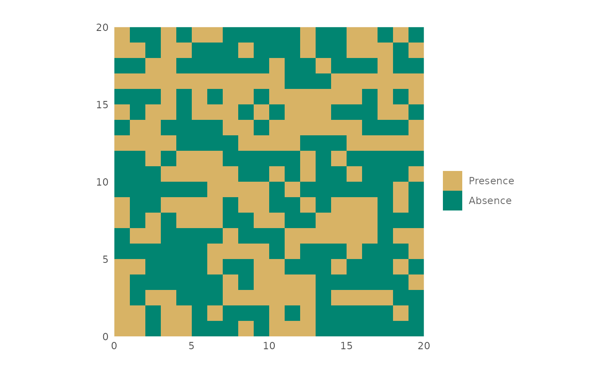
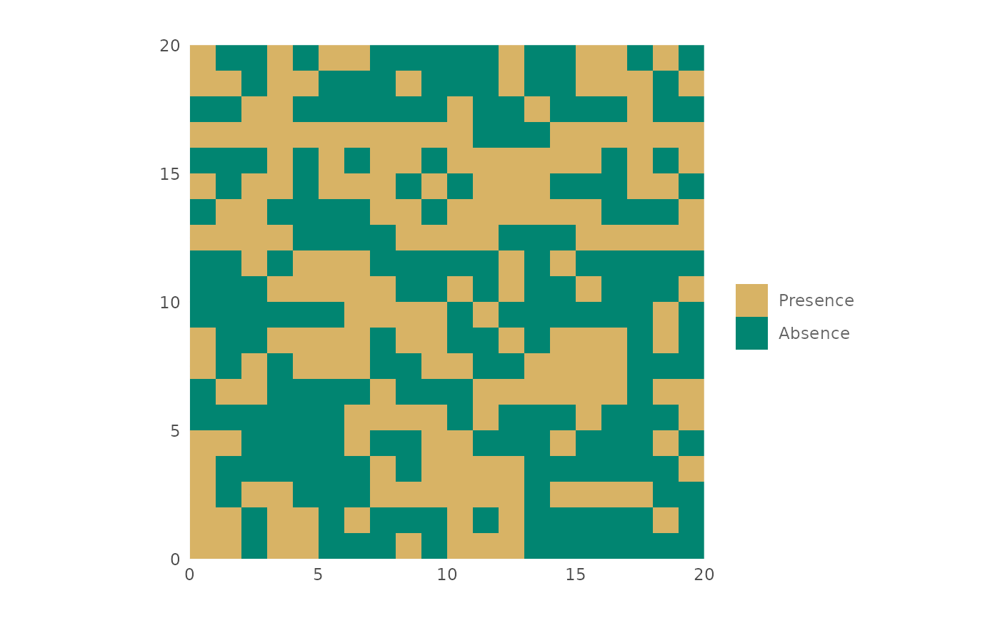

Plot a presence absence map using the given threshold.
Usage
plotPA(
map,
th,
colors = NULL,
hr = FALSE,
filename = "",
overwrite = FALSE,
wopt = list(),
...
)Arguments
- map
rast object with the prediction.
- th
numeric. The threshold used to convert the output in a presence/absence map.
- colors
vector. Colors to be used, default is
NULLand it uses red and blue.- hr
logical. If
TRUEit produces an output with high resolution.- filename
character. If provided the raster map is saved in a file. It must include the extension.
- overwrite
logical. If
TRUEan existing file is overwritten.- wopt
list. Writing options passed to writeRaster.
- ...
Unused arguments.
Value
A ggplot object.
Examples
map <- terra::rast(matrix(runif(400, 0, 1),
nrow = 20,
ncol = 20))
plotPA(map,
th = 0.8)
 # Custom colors
plotPA(map,
th = 0.5,
colors = c("#d8b365", "#018571"))

if (FALSE) {
# Save the file. The following command will save the map in the working
# directory. Note that `filename` must include the extension.
plotPA(map,
th = 0.7,
filename = "my_map.tif")}
# Custom colors
plotPA(map,
th = 0.5,
colors = c("#d8b365", "#018571"))

if (FALSE) {
# Save the file. The following command will save the map in the working
# directory. Note that `filename` must include the extension.
plotPA(map,
th = 0.7,
filename = "my_map.tif")}